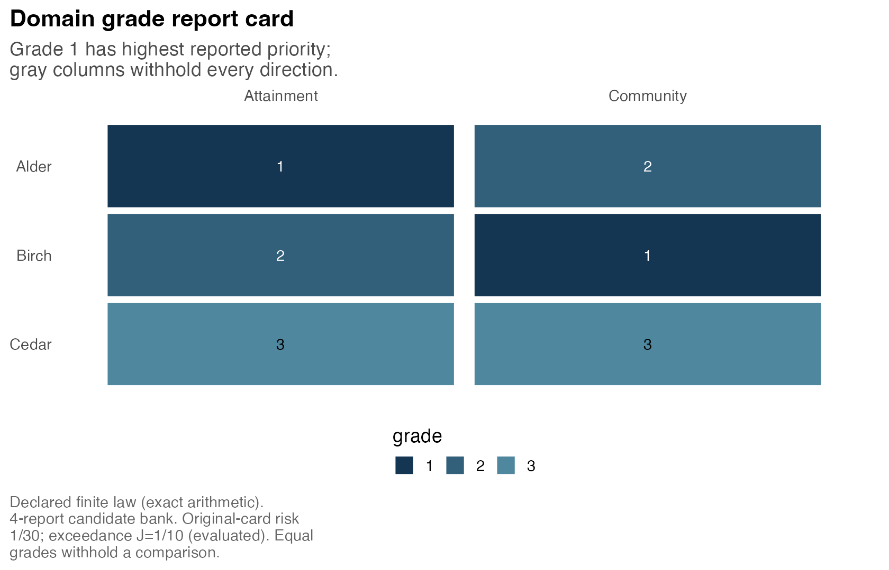
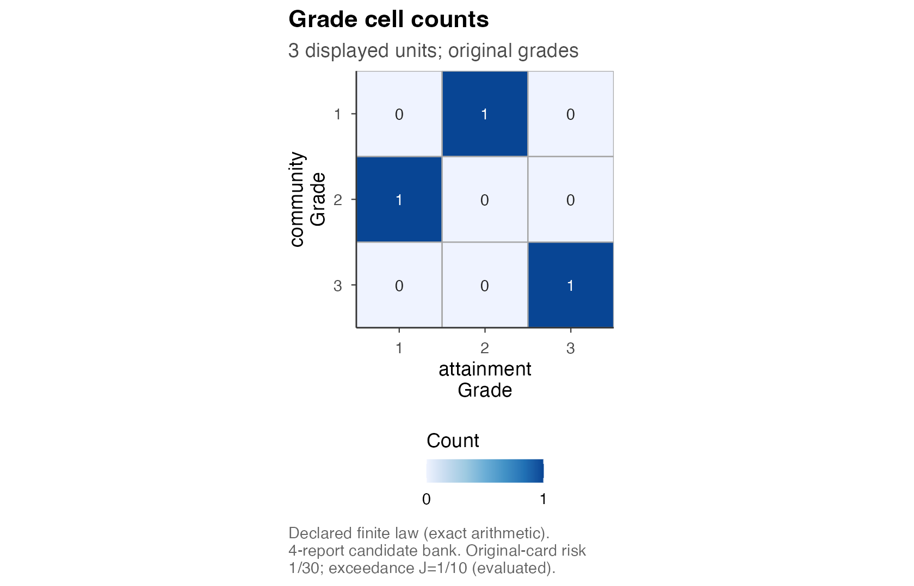
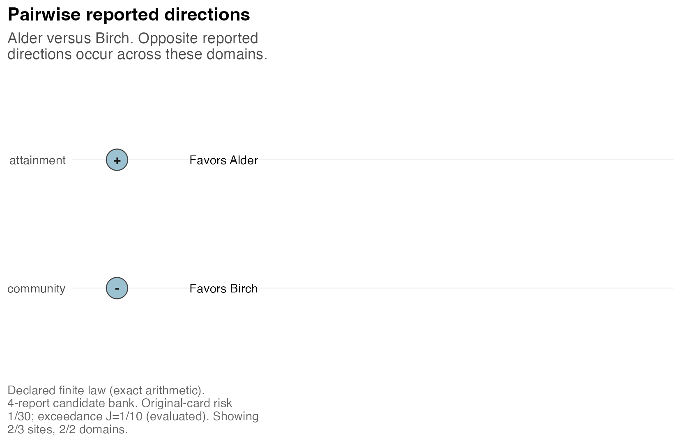

Grading entities across multiple domains
Source:vignettes/mdomain-quickstart.Rmd
mdomain-quickstart.RmdWhereas postrank() assigns one common grade shared
across criteria, a multidomain report card assigns each unit a
separate integer grade in each domain. A unit can
receive higher priority in one domain and lower priority in another.
Within each domain, Grade 1 is the highest priority, and giving two
units the same grade leaves that pair unordered in that domain without
claiming that their underlying targets are equal. As throughout
postrank, statistical model fitting happens outside the
package and results depend on the posterior you supply.
This article builds a two-state discrete probability distribution for
three units across two domains, evaluates a proposed multidomain report
card, searches a declared set of candidate grade columns, plots three
views of the selected card, and compares exact, IID, and MCMC assessment
modes. All calculations run offline without an external MIP or LP solver
when the suggested gmp package (used for exact rational
arithmetic) is installed via install.packages("gmp").
The multidomain workflow uses eight functions:
| Function | Role |
|---|---|
postrank_mdomain_input() |
Attach joint or domain-wise states to target definitions and source metadata. |
postrank_mdomain_decision() |
Set domain loss weights, withholding costs, expected-error budgets, and joint exceedance caps. |
postrank_mdomain_evaluate() |
Evaluate a fixed unit-by-domain integer grade matrix. |
postrank_mdomain_grades() |
Extract the verified grade matrix from an evaluated card or solved fit. |
postrank_mdomain_family() |
Declare the candidate grade columns allowed in each domain. |
postrank_mdomain_solve() |
Evaluate every combination in the declared candidate set and select an optimal feasible card. |
postrank_mdomain_assess() |
Check joint-exceedance quantities under
"exact", "iid", or "mcmc"
rules. |
postrank_plot_mdomain() |
Plot domain grades ("grades"), profile
cells ("cells"), or two-unit comparisons
("pair"). |
Building a multidomain input from joint states
Joint state arrays have dimensions
state x unit x domain, where each state
slice holds all units and all domains together so cross-unit and
cross-domain dependence are preserved. Below, two slices specify a
complete discrete posterior—putting probability 9/10 on
"usual" and 1/10 on "reversal"
rather than approximating a continuous distribution with two Monte Carlo
draws:
unit_ids <- c("Alder", "Birch", "Cedar")
domain_ids <- c("attainment", "community")
states <- array(NA_real_, c(2L, 3L, 2L),
dimnames = list(c("usual", "reversal"), unit_ids, domain_ids))
states["usual", , "attainment"] <- c(3, 2, 1)
states["usual", , "community"] <- c(2, 3, 1)
states["reversal", , "attainment"] <- c(2, 3, 1)
states["reversal", , "community"] <- c(3, 2, 1)Every domain must already be oriented so that larger values mean
higher priority (orientation = "larger_is_higher"). In each
domain’s target record, equality_classes declares
structural model identities across units: giving each unit its own class
label states that the model does not force two units to share an
identical target (even if two units happen to tie in an individual
state):
targets <- setNames(lapply(domain_ids, function(d) list(
definition = paste("Fictional", d, "priority coordinate"),
units = "illustrative score", orientation = "larger_is_higher",
transformations = list(),
equality_classes = setNames(unit_ids, unit_ids),
equality_provenance = "The model imposes no identity between distinct units."
)), domain_ids)Next we describe where the distribution came from
(provenance) and combine the states, target definitions,
and exact rational state probabilities (masses) in
postrank_mdomain_input():
provenance <- list(
input_id = "three-unit-support", law_id = "fictional-two-state-law",
proper_law = TRUE, producer = "Self-contained teaching example",
conditioning_info = "No observations: this is a specified probability law.",
joint_generation = paste("Each labeled slice is one complete state",
"of all units and domains."),
sampling_assumptions = list(finite_support_origin = paste(
"These two states exhaust the specified fictional law;",
"they are not sampled draws."))
)
input <- postrank_mdomain_input(states, targets = targets,
provenance = provenance, representation = "exact_finite_law",
masses = c("9/10", "1/10"))
input
#> Multidomain posterior input
#> 3 units; 2 domains; joint_array
#> Representation: exact_finite_law
#> Coupling: supplied_joint
#> Proper law: producer declaration; numerical guarantee: nonepostrank_mdomain_input() checks array dimensions, ID
ordering, probability masses, and required metadata fields; it does not
verify that an upstream model is well specified or properly sampled.
Keep the same unit order and domain order across targets,
policy vectors, and grade matrices (and never pair separate domain
simulations by row number as if they came from a joint state).
Choosing a decision rule and evaluating a profile card
Our policy gives equal weight ("1/2" and
"1/2") to the two domains, charges tau = "1/5"
per unordered pair, omits per-domain expected-error budgets
(q = NULL), and bounds the joint
exceedance probability across domains by alpha = "1/5" at
error-proportion threshold t = "0" (at
t = "0", a single wrong-direction ordered pair in either
domain triggers the exceedance event):
decision <- postrank_mdomain_decision(
weights = c(attainment = "1/2", community = "1/2"),
tau = "1/5", q = NULL, t = "0", alpha = "1/5")
G <- cbind(attainment = c(1, 2, 3), community = c(2, 1, 3))
rownames(G) <- unit_ids
card <- postrank_mdomain_evaluate(input, G, decision)
card
#> Fixed multidomain report evaluation
#> 3 units; 2 domains; mode: joint
#> Risk: 1/30; joint probability: 1/10
#> Joint guards: evaluated; feasible_for_represented_measure
#> Basis: declared_finite_law; exact_represented_measure_arithmetic
#> Intended posterior feasibility certificate: none
postrank_mdomain_grades(card)
#> attainment community
#> Alder 1 2
#> Birch 2 1
#> Cedar 3 3Notice that Alder has profile (1, 2) while
Birch has (2, 1): Alder ranks
higher in attainment and Birch ranks higher in
community, with no single combined ranking forced onto the
two units. Under the supplied finite distribution, this card has exact
additive loss 1/30 (risk_exact) and exact
joint exceedance probability 1/10 (J_exact),
satisfying alpha = "1/5" because the
"reversal" state causes wrong-direction orders in both
domains simultaneously and is counted once in the union event:
card[["domain_table"]][, c("domain_id", "N", "EF_exact", "loss_exact")]
#> domain_id N EF_exact loss_exact
#> 1 attainment 3 1/10 1/30
#> 2 community 3 1/10 1/30
card[["event_table"]][, c("domain_id", "N", "cutoff_exact", "p_exact")]
#> domain_id N cutoff_exact p_exact
#> 1 attainment 3 1 1/10
#> 2 community 3 1 1/10
card[["feasible_for_represented_measure"]]
#> [1] TRUEWith three units, every domain has M = choose(3, 2) = 3
unordered pairs. Domain loss divides expected wrong-direction pairs plus
tau times unordered pairs by M, whereas the
protected error proportion divides wrong-direction pairs F
by N, the number of ordered (disclosed) pairs
in that scope—triggering when F / N > t (that is,
F >= floor(t * N) + 1). Ordering two units strictly when
their targets are equal counts as a wrong-direction error. Within each
domain, units sharing that domain’s equality_classes label
must receive the same grade, even when the domain has weight zero. Two
units can therefore share an attainment grade and receive different
community grades if the community model assigns them to distinct
classes.
When a column leaves all pairs unordered (N = 0), the
error proportion eFDP is NA, the
zero-when-withheld convention eFDP_zero is 0
(with eFDP_zero_exact equal to "0"), and
F / N > t cannot occur in any state (which is
structural, distinct from observing zero exceedances in a small Monte
Carlo sample):
withheld <- postrank_mdomain_evaluate(input, G * 0 + 1, decision)
withheld[["scope_table"]][, c("domain_id", "N", "eFDP", "eFDP_zero")]
#> domain_id N eFDP eFDP_zero
#> 1 attainment 0 NA 0
#> 2 community 0 NA 0
withheld[["status"]][["joint"]]
#> [1] "analytic_zero"Pass exact fractions or decimal strings (such as "1/10"
or "0.1") in postrank_mdomain_decision()
whenever a policy threshold is an exact rational number; a bare R
numeric literal such as 0.1 keeps its binary floating-point
value, which can differ at strict inequality boundaries. Integer grade
labels only encode order and shared grades and are relabeled to
1, 2, ... (10, 20, 30 defines the exact same
card as 1, 2, 3).
Searching a declared set of candidate columns
postrank_mdomain_family() lists the grade columns
allowed in each domain in original unit order (always including the
1-grade all-withheld column). With two allowed columns in each of two
domains, the Cartesian product contains four candidate report cards, and
postrank_mdomain_solve() evaluates all four:
family <- postrank_mdomain_family(input, columns = list(
attainment = list(setNames(G[, "attainment"], unit_ids)),
community = list(setNames(G[, "community"], unit_ids))),
max_actions = 4L)
fit <- postrank_mdomain_solve(input, family, decision, max_actions = 4L)
fit
#> Multidomain candidate-family fit
#> 4 declared actions examined; 1 optimizer (unique)
#> Risk: 1/30; joint probability: 1/10
#> Scope: complete declared candidate product; unrestricted optimality not established
#> Search: candidate_restricted_exact_optimum_for_represented_measure
#> Intended posterior feasibility certificate: none
fit[["candidate_table"]][, c("risk_exact", "J_exact",
"feasible_for_represented_measure", "optimal", "selected")]
#> risk_exact J_exact feasible_for_represented_measure optimal selected
#> 1 1/5 0 TRUE FALSE FALSE
#> 2 7/60 1/10 TRUE FALSE FALSE
#> 3 7/60 1/10 TRUE FALSE FALSE
#> 4 1/30 1/10 TRUE TRUE TRUE
postrank_mdomain_grades(fit)
#> attainment community
#> Alder 1 2
#> Birch 2 1
#> Cedar 3 3Among these four candidates, the crossing card
(risk_exact = "1/30", J_exact = "1/10")
achieves the smallest loss while meeting the joint exceedance cap.
Optimality holds only within the declared candidate
set: postrank_mdomain_solve() makes no claim about
grade partitions outside family. When multiple candidates
tie at the minimum exact loss, all tied optimizers are flagged
(optimal = TRUE) and the first in lexicographic order of
the renumbered (1..K_d) grade columns is marked
selected = TRUE. The max_actions cap stops
with an error before enumerating an oversized Cartesian product rather
than truncating the search.
To build larger ordered candidate sets per domain, pass unit-ID
permutations to order and allowed cutpoints to
cuts in postrank_mdomain_family(). Choosing
order = "posterior_mean" computes each domain’s ordering
from the supplied states and records that data-dependent choice in
metadata (which is not an independent held-out validation).
Plotting three views of a multidomain card
postrank_plot_mdomain() renders three views from the
stored card or solved fit without running new evaluations. Setting
domain_labels or unit_labels relabels axes for
display while keeping underlying IDs intact:
postrank_plot_mdomain(fit, view = "grades",
domain_labels = c(attainment = "Attainment", community = "Community"))
Open full-size figureMultidomain grade profiles for Alder, Birch, and Cedar across Attainment and Community; Alder is Grade 1 in Attainment and Grade 2 in Community, whereas Birch reverses those two grades.
view = "cells" counts how many units fall in each
(attainment, community) grade combination while keeping
empty cells visible (profile cells are a two-dimensional grid rather
than a single combined ranking):
postrank_plot_mdomain(fit, view = "cells")
Open full-size figureOccupied and empty profile cells across the three Attainment grades and three Community grades, with one unit each at (1, 2), (2, 1), and (3, 3).
view = "pair" compares two selected units across every
domain (units filters only what is drawn, while caption
losses and exceedance probabilities still describe the full report
card):
postrank_plot_mdomain(fit, view = "pair", units = c("Alder", "Birch"))
Open full-size figurePairwise domain comparison between Alder and Birch: Alder has higher reported priority in attainment and Birch has higher reported priority in community.
Using posterior draws and choosing "exact",
"iid", or "mcmc" assessment
When your posterior comes from Monte Carlo simulation rather than a
closed finite distribution, keep all units and domains from each draw
together in one slice with unique draw IDs (you can also pass an
existing validated postrank_draws object directly to
postrank_mdomain_input() with
provenance = list(input_id = ..., law_id = ..., proper_law = TRUE),
leaving targets = NULL so its stored target definitions and
sampling metadata carry over). Below we draw 20 independent
states from the two-state distribution:
set.seed(120)
draw_rows <- sample.int(2L, 20L, replace = TRUE, prob = c(0.9, 0.1))
joint_draws <- states[draw_rows, , , drop = FALSE]
dimnames(joint_draws)[[1L]] <- paste0("draw-", seq_len(20L))
draw_provenance <- provenance
draw_provenance[["input_id"]] <- "three-unit-iid-draws"
draw_provenance[["joint_generation"]] <- "Independent draws of complete two-domain states."
draw_provenance[["sampling_assumptions"]] <- list(
iid_mechanism = "Independent categorical draws from the two-state law.",
target_assertion = "Each complete draw targets fictional-two-state-law."
)
draw_input <- postrank_mdomain_input(joint_draws, targets = targets,
provenance = draw_provenance, representation = "iid_equal_weight_draws")
draw_card <- postrank_mdomain_evaluate(draw_input, G, decision)
draw_card[["assurance"]][c("numerical_basis",
"intended_posterior_feasibility_certified")]
#> $numerical_basis
#> [1] "supplied_empirical_measure"
#>
#> $intended_posterior_feasibility_certified
#> [1] FALSEExact rational arithmetic (gmp) over empirical
draw counts or a finite distribution is not a numerical guarantee about
the intended posterior
(intended_posterior_feasibility_certified is
FALSE). Match postrank_mdomain_assess() to how
your states were produced:
-
method = "iid": evaluates a fixed-sample binomial tail check when the grade matrix, decision policy, target law, sample size, and failure budget were fixed before drawing independent validation states (reusing states that selected or ordered the card does not satisfy that design). -
method = "mcmc": requiresrepresentation = "mcmc_equal_weight_draws"withstate_origin(source_index,chain_id,iteration_idin supplied state order) and computes descriptive chain and batch summaries; zero observed exceedances and chain summaries do not provide an IID guarantee or prove convergence. -
method = "exact": evaluates the exact joint-exceedance probability under a completeexact_finite_law(describing that finite distribution without checking model calibration, expected-error budgetsq, or optimality):
assessed <- postrank_mdomain_assess(input, fit, method = "exact")
assessed
#> Fixed multidomain report assessment
#> Method: exact; status: evaluated_declared_finite_law
#> Risk: 1/30; joint probability: 1/10
#> Joint certificate: yes; scope: specified declared-finite-law joint event only
#> Sampling assumptions verified: no; model calibration certified: no
assessed[["certificate_scope"]]
#> [1] "specified declared-finite-law joint event only"See Separate domain rules versus joint multidomain protection for cross-domain dependence examples and MCMC chain diagnostics.
Fixing two common input mistakes
Multidomain validation errors inherit class
"postrank_mdomain_error" and store machine-readable
code and field entries so scripts can inspect
what failed without parsing error text. First, omitting
joint_generation on a 3D state array stops on
provenance.joint_generation:
incomplete <- provenance
incomplete[["joint_generation"]] <- NULL
missing_joint <- tryCatch(
postrank_mdomain_input(states, targets = targets, provenance = incomplete,
representation = "exact_finite_law", masses = c("9/10", "1/10")),
postrank_mdomain_error = identity)
c(code = missing_joint[["code"]], field = missing_joint[["field"]])
#> code field
#> "mdomain_input_invalid" "provenance.joint_generation"Supply your actual joint_generation statement when
states come from one joint distribution, or pass a domain-named list of
2D state x unit matrices with
within_domain_joint in provenance when domains
come from separate fits (never claim joint generation just because
separate fits have the same number of rows).
Second, passing a grade matrix whose row order differs from
input$unit_ids stops on grades:
reordered <- G[c("Birch", "Alder", "Cedar"), , drop = FALSE]
bad_ids <- tryCatch(postrank_mdomain_evaluate(input, reordered, decision),
postrank_mdomain_error = identity)
c(code = bad_ids[["code"]], field = bad_ids[["field"]])
#> code field
#> "mdomain_action_identity" "grades"
repaired <- reordered[input[["unit_ids"]], input[["domain_ids"]], drop = FALSE]
postrank_mdomain_grades(postrank_mdomain_evaluate(input, repaired, decision))
#> attainment community
#> Alder 1 2
#> Birch 2 1
#> Cedar 3 3Reorder rows and columns by name
([input$unit_ids, input$domain_ids, drop = FALSE]) rather
than overwriting rownames() or colnames(),
which would attach grades to the wrong units.